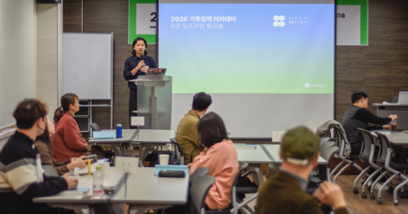
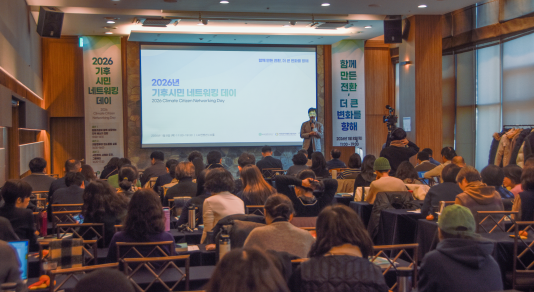
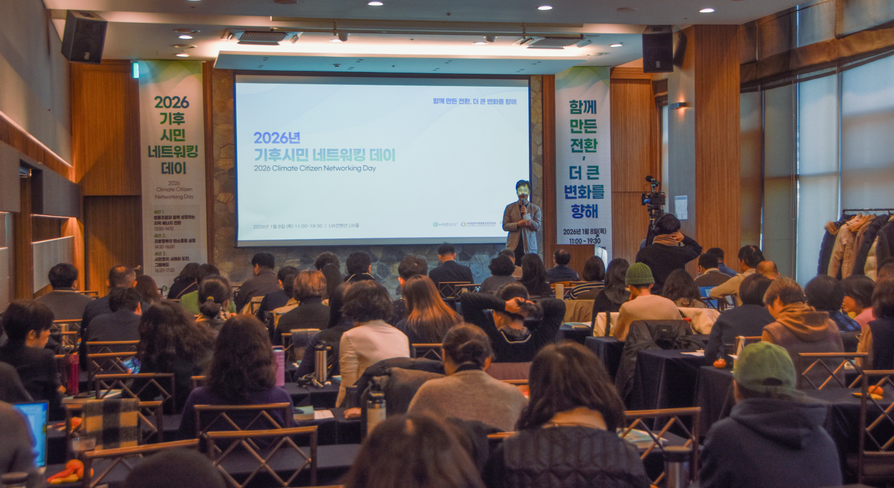

연구 및 정책 투자
현장의 요구를 분석해 정책 결정권자가 거부할 수 없는 정교한 근거를 만듭니다. 현장의 목소리를 실제 변화로 이끄는 밑거름이 됩니다.
오늘의 녹색 변화를 만드는 곳, 녹색전환연구소
개인의 선의만으로는 세상을 바꾸는 데 한계가 있습니다.
여러분의 후원으로 나라의 예산과 우리 동네의 규칙이
기후를 우선하도록 재설계합니다.
후원금은 연구·정책 사업에 투명하게 쓰입니다.

1 · 공감
"나 혼자 분리배출 열심히 한다고 세상이 바뀔까?"
우리가 느끼는 무력감은 정성이 부족해서가 아닙니다.
개인이 아무리 애써도 바뀌지 않는 제도와 예산의 방향 때문입니다.
"지구를 아끼는 내 마음이 사회 시스템이라는 벽에 부딪히고 있진 않나요?"
기후위기는 개인의 습관을 넘어 나라 살림의 물줄기가 바뀌어야 해결됩니다.
내 일상의 노력이 한계에 부딪히는 바로 그 지점에서, 녹색전환연구소의 정책 대안이 시작됩니다.
기후시민 · 의제 설정
세미나·공론장 등 모임을 이어 오며 기후위기를 국가 핵심 의제로 격상하고, 한국 최초로 기후·에너지가 대선 TV 토론에 오르는 토대를 마련했습니다.

경제전환 · 법안 반영
연구를 바탕으로 김정호 의원실과 협력해 발의한 「탄소중립 산업법」에 중소기업 지원이 명문화되었습니다.
지역전환 · 조례 제정
연구 결과가 단순 제안을 넘어 지방의회를 통과해, 전국 최초로 법적 효력을 가진 녹색 일자리 조례로 제정되었습니다.

그리고 이어진 변화들
연구소의 불은 오늘도 꺼지지 않습니다.
3 · 후원금의 쓰임
현장의 요구를 분석해 정책 결정권자가 거부할 수 없는 정교한 근거를 만듭니다. 현장의 목소리를 실제 변화로 이끄는 밑거름이 됩니다.
내 삶의 데이터가 정책으로 제안되는 과정을 지켜보고, 시스템을 바꾸는 직접 참여를 경험합니다. 1.5도 라이프스타일 캠페인 등을 지원합니다.
한국 사회 기후 의제의 표준을 세웁니다. 모든 의사결정에 기후 책임을 심는 녹색전환 펀드를 통해 미래 준비에 투자합니다.
4 · 당신의 자리
월 10,000원
연구의 동력을 만드는 사람
어려운 기후 지식을 누구나 이해할 수 있는 쉬운 언어로 바꾸어 사회에 널리 알립니다.
추천
월 30,000원
정책을 함께 설계하는 파트너
현장의 목소리를 실제 법안으로 만들어, 제도와 예산을 바꾸는 실질적인 변화를 이끌어냅니다.
월 50,000원+
독립성을 지키는 강력한 지지자
외풍에 흔들리지 않는 독립 연구로, 우리 사회의 10년을 바꿀 장기적인 정책 지도를 그립니다.
FAQ
후원과 회원 혜택에 대해 많이 물어보시는 내용을 모았습니다.
연구·정책 사업, 시민 참여 프로그램 등 공익 사업 전반에 사용되며 연간 보고를 통해 투명하게 공개합니다.
매달 일정액을 자동이체하는 방식과 원하실 때 한 번에 보내는 방식 모두 연구소 활동에 큰 힘이 됩니다.
관련 법령에 따라 기부금 영수증 발급 및 세액공제 혜택을 받으실 수 있습니다.
회원 정보 수정 페이지나 고객센터(02-2135-1148)를 통해 금액 변경, 해지, 결제 수단 변경이 가능합니다.
02-2135-1148 또는 이메일 yeonju@igt.or.kr로 연락 주시면 상세히 안내해 드립니다.
연구소가 정부나 기업의 지원금에 기대지 않고 시민의 후원으로만 움직여야 하는 이유는 분명합니다.
그래야만 어떤 압박에도 흔들리지 않고, 녹색전환을 위한 현실적 대안을 끝까지 말할 수 있기 때문입니다. 지금 녹색전환연구소의 든든한 파트너가 되어주세요.